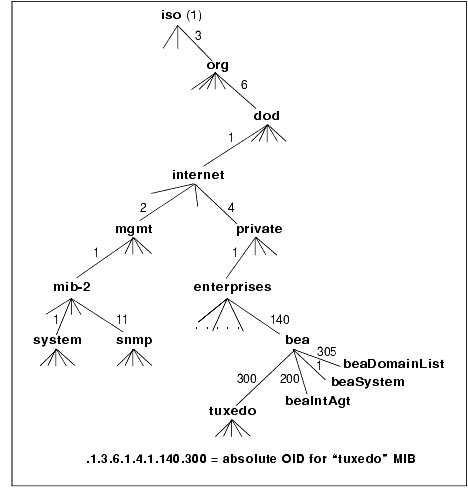
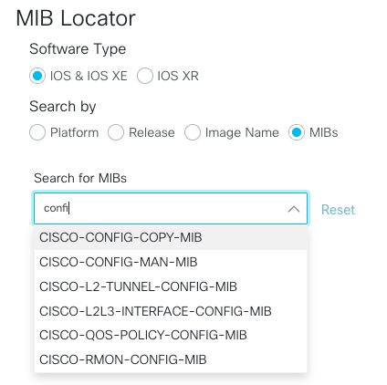

Review of SNMP Fundamentals¶

SNMP is a protocol developed to manage network devices. It was designed to configure devices, monitor them and receive push alerts. It was first conceived in 1988 and has evolved over time.
SNMP aimed to be a standard interface to devices, regardless of the vendor. It partially succeeded by formalizing a set of interfaces, but it also failed, because each vendor was allowed to extend the data structure with the interfaces needed to characterize its own devices.
Its security was a problem for several years, to the point that the implementation of device configuration functionalities was significantly limited.
SNMP has been a vital protocol for network monitoring, but its complexity, its initial insecurity and its centralized architecture led to the development of alternative solutions.
In this post, we review the SNMP ecosystem and how to implement and use versions 2 and 3.
MIB¶
MIB is the modeling language that defines the data structure used by SNMP. The MIB (Management Information Base) defines a tree-structured data format that includes all the objects manageable via SNMP. Each object has a unique OID (Object Identifier), which gives access to that specific object.

The tree consists of a standard part and a custom part. Each company can define its own objects by attaching them to the enterprises branch. Since each object must be unique, any company that needs to define its own objects should request a free Private Enterprise Number from IANA. To date, more than 6000 companies have customized the use of SNMP. This has two consequences:
- It is difficult to find a repository that contains all the updated MIBs.
- Some MIBs may be incompatible with others, because they are based on different versions.
To retrieve the hostname of a system via SNMP, we can use the sysName object defined in the SNMPv2-MIB. sysName has ID 5, starting from system, which has ID 1. system attaches to mib-2, which has ID 1 and is part of mgmt. Moving up the tree, we find that the OID of sysName is iso.org.dod.internet.mgmt.mib-2.system.5, translated to 1.3.6.1.2.1.1.5.
sysName is defined as a string that can be accessed in both read and write mode:
Read and write are the only two permissions possible in SNMP. Security in the first two versions of SNMP was quite weak, so the write operation was disabled on almost all devices. SNMPv3 corrected the security issues, but SNMP remained a monitoring protocol rather than a configuration one.
On Linux, we can download the MIBs with the download-mibs command, included in the snmp-mibs-downloader package:
At this point, we should be able to translate OIDs correctly between textual and numeric formats:
snmptranslate -m ALL -TB sysNa
snmptranslate -m ALL .1.3.6.1.2.1.1.5
snmptranslate -m ALL -On SNMPv2-MIB::sysName
snmptranslate -m ALL -Os .1.3.6.1.2.1.1.5
snmptranslate -m ALL -Of .1.3.6.1.2.1.1.5
The snmptranslate command converts a numeric OID into a textual OID. The options used in the commands above are:
-m ALL: use all the available MIBs.-TB: search for an OID using a keyword.-On: print a textual OID in numeric form.-Os: print only the last element of the OID in textual form.-Of: print the full textual OID.
Query¶
A query lets us read the value of one or more objects. The device must be configured to allow us to read that specific value. Here are some examples for SNMPv2 and SNMPv3.
The configuration for SNMPv2 is quite simple: we set a community and the type of access. In the example below, we use the community public, knowing that in a production environment we should use a much more complex string:
We can enrich the configuration by setting the location and contact fields:
The ifindex persist setting lets the interfaces keep their ID even after a reboot.
We can read the value of a specific OID:
$ snmpget -m ALL -v 2c -c public 169.254.1.118 sysName
Bad operator (INTEGER): At line 73 in /usr/share/snmp/mibs/ietf/SNMPv2-PDU
SNMPv2-MIB::sysName = No Such Instance currently exists at this OID
In this case, the device reports that the OID sysName does not exist. The reason is that the complete OID is sysName.0:
$ snmpget -m ALL -v 2c -c public 169.254.1.118 sysName.0
Bad operator (INTEGER): At line 73 in /usr/share/snmp/mibs/ietf/SNMPv2-PDU
SNMPv2-MIB::sysName.0 = STRING: R1.example.com
For this reason, I tend to use snmpwalk, which does not stop at the requested OID but traverses all the branches it finds:
$ snmpwalk -m ALL -v 2c -c public 169.254.1.118 sysName
Bad operator (INTEGER): At line 73 in /usr/share/snmp/mibs/ietf/SNMPv2-PDU
SNMPv2-MIB::sysName.0 = STRING: R1.example.com
We also notice that the downloaded MIBs contain an error, reported with each command. This shows how complex it is to maintain an intact, error-free MIB repository.
Traditional monitoring systems poll devices regularly via SNMP and check the parameters that help determine the behavior of the device. This has two consequences:
- As the number of devices grows, continuous polling overloads the monitoring system.
- Continuous polling consumes device resources even when nothing significant changes.
Set¶
The set action lets us assign a value to one or more OIDs. The device must be set up to authenticate and accept this type of operation. In its simplest form (SNMPv2), it requires a community with read-write permissions.
In the example above, we configured a Cisco device to accept write operations using the community private. In a production environment, the community should of course be a sufficiently complex string. As mentioned, because of the inherent weaknesses of the protocol, this type of implementation is rarely seen.
Once we have configured a privileged community, we can, for example, set the new hostname via SNMP:
$ snmpset -m ALL -v 2c -c private 169.254.1.118 sysName.0 s R1NEW.example.com
Bad operator (INTEGER): At line 73 in /usr/share/snmp/mibs/ietf/SNMPv2-PDU
SNMPv2-MIB::sysName.0 = STRING: R1NEW.example.com
The operation changes only the hostname value. If we connect to the device, we discover that the configuration has not been saved. Saving the configuration via SNMP requires specific actions that depend on the device in use.
In the following sections, we see how to save the configuration via SNMP.
Finding and Using a MIB¶
First, we need to check whether the save operation is possible via SNMP. As mentioned, the operation is not standard: if an OID exists, it is likely located within the private.enterprises branch.
We start by searching Google for cisco mib locator, which leads us to the official Cisco page that manages the MIB archive for all the devices:

If we search for config, we find a CISCO-CONFIG-COPY-MIB. We download it along with its dependencies, CISCO-SMI and CISCO-ST-TC, and copy the three files into the /usr/share/snmp/mibs directory.
If the repository is correct, we should be able to verify an OID:
The process was one of trial and error:
- We hypothesized the existence of an OID to save the configuration.
- We used Google to find the Cisco MIB archive.
- We assumed that the string
configwould be present in the MIB we needed. - We downloaded the dependencies until we had a working command.
If we now analyze the CISCO-CONFIG-COPY-MIB, we see that:
This MIB facilitates writing of configuration files of an SNMP Agent running Cisco's IOS in the following ways: to and from the net, copying running configurations to startup configurations and vice-versa, and copying a configuration (running or startup) to and from the local IOS file system.
The MIB is the right one; we only need to understand how to use it.
If we keep reading, we find the following OIDs:
ccCopyProtocol: sets the protocol used to transfer the configuration, which we can ignore in our case.ccCopySourceFileType: contains the source file type. The values are described in theConfigFileTypeOID, specificallyrunningConfig=4.ccCopyDestFileType: contains the destination file type. The values are described in theConfigFileTypeOID, specificallystartupConfig=3.ccCopyEntryRowStatus: lets us start the copy (createAndGo=4).ccCopyState: contains the result of the copy operation. The values are described in theConfigCopyStateOID (waiting=1,running=2,successful=3,failed=4).ConfigCopyFailCause: contains the reason for the failure of the copy operation.
To save the configuration (copy running-config startup-config), we must set the following OIDs using a random index:
ccCopySourceFileType.777 i 4ccCopyDestFileType.777 i 3ccCopyEntryRowStatus.777 i 4
We can use a single command:
snmpset -m ALL -v 2c -c private 169.254.1.118 ccCopySourceFileType.777 i 4 ccCopyDestFileType.777 i 3 ccCopyEntryRowStatus.777 i 4
We can then check the outcome of the operation:
SNMP Table¶
In some cases, certain OIDs can be represented together as a table. When this is possible, there is usually a specific OID that refers to this concept.
In the case above, there is the ccCopyTable OID, which we can query with the snmptable utility:
In the example above, we print the table using a comma as the separator.
A more familiar example is printing the interface table:
Trap¶
In addition to giving access to device data, SNMP can notify an external server of events (traps). The external server must have the necessary MIBs to translate the event, so that people can interpret it.
We can install a simple daemon that receives the traps sent by the devices:
The device must be configured to send traps to a specific host:
We can choose which traps to enable, or enable them all indiscriminately:
The daemon must be configured to accept traps with the community we set (public). We configure the snmptrapd daemon through the /etc/snmp/snmptrapd.conf file:
This way, we accept the traps with the public community and send all the traps to syslog with the logger command.
We restart the daemon:
At this point, the received traps are forwarded to the syslog daemon:
Oct 16 17:54:01 eve-ng Debian-snmp: <UNKNOWN>
Oct 16 17:54:01 eve-ng Debian-snmp: UDP: [169.254.1.118]:54361->[169.254.1.1]:162
Oct 16 17:54:01 eve-ng Debian-snmp: iso.3.6.1.2.1.1.3.0 1:1:18:10.81
Oct 16 17:54:01 eve-ng Debian-snmp: iso.3.6.1.6.3.1.1.4.1.0 iso.3.6.1.4.1.9.9.43.2.0.1
Oct 16 17:54:01 eve-ng Debian-snmp: iso.3.6.1.4.1.9.9.43.1.1.6.1.3.16 1
Oct 16 17:54:01 eve-ng Debian-snmp: iso.3.6.1.4.1.9.9.43.1.1.6.1.4.16 2
Oct 16 17:54:01 eve-ng Debian-snmp: iso.3.6.1.4.1.9.9.43.1.1.6.1.5.16 3
Oct 16 17:54:01 eve-ng Debian-snmp: iso.3.6.1.6.3.18.1.3.0 169.254.1.118
Oct 16 17:54:01 eve-ng Debian-snmp: iso.3.6.1.6.3.18.1.4.0 "public"
Oct 16 17:54:01 eve-ng Debian-snmp: iso.3.6.1.6.3.1.1.4.3.0 iso.3.6.1.4.1.9.9.43.2
The OIDs are numeric and difficult to read.
In the real world, the daemon is associated with a series of handlers that trigger notifications or actions through workflows.
SNMPv3¶
So far, we have focused on SNMPv2. Its simplicity is also its main weakness: most field implementations use very simple communities, and the protocol does not encrypt them.
SNMPv3 operates on two levels: authentication and encryption. There are three possible security levels:
noAuthNoPriv: the channel is neither authenticated nor encrypted.authNoPriv: the channel is authenticated (via MD5 or SHA) but not encrypted.authPriv: the channel is authenticated (via MD5 or SHA) and encrypted (using DES or AES).
It is also possible to restrict access to the OID tree, specifying which branches to include or exclude.
The configuration of the devices is therefore more complex and requires creating:
- A view that includes or excludes the OIDs.
- A group associated with a security level and the required privilege (read or write).
- A user associated with the group that meets the requirements of the associated security level.
snmp-server view ROOT iso included
snmp-server group PUB v3 noauth read ROOT
snmp-server group MONITOR v3 auth read ROOT
snmp-server group SECRET v3 priv read ROOT write ROOT
snmp-server user APP1 PUB v3 auth sha password1
snmp-server user APP2 MONITOR v3 auth sha password2
snmp-server user APP3 SECRET v3 auth sha password3 priv aes 256 secretpass3
We can then use the three users to perform queries: